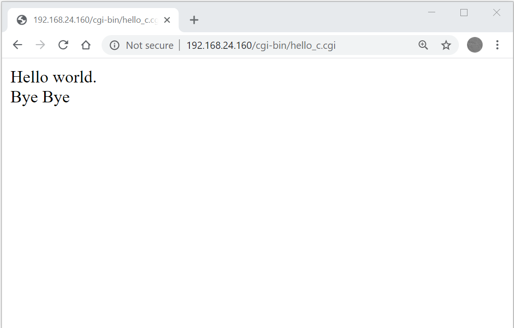
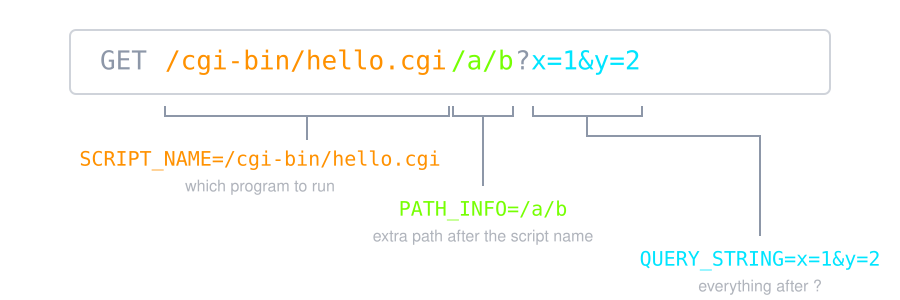
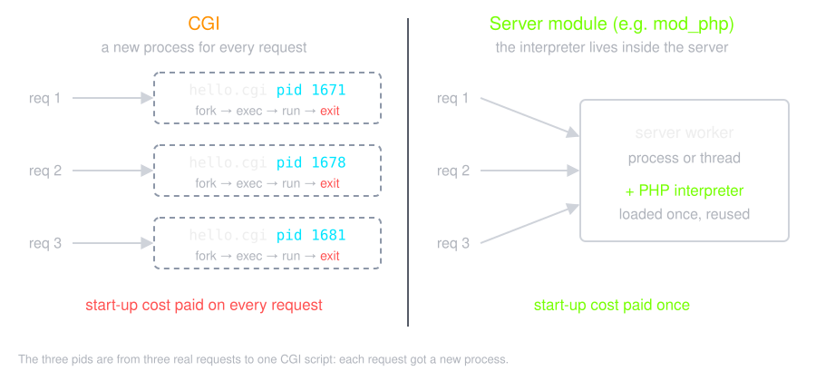
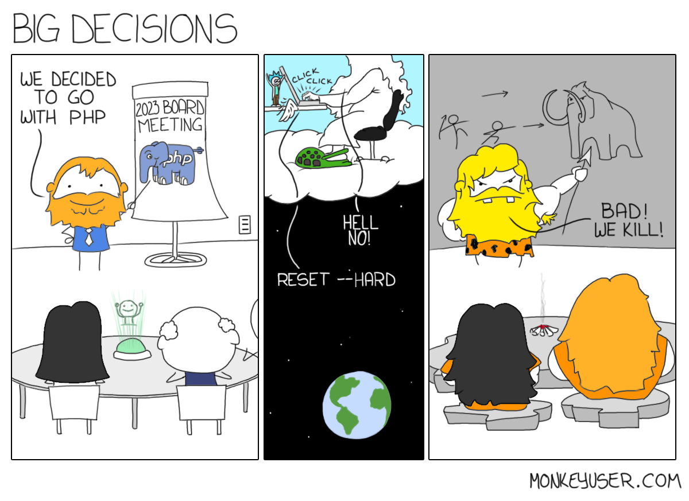

Typical Web based Application
![A sequence between browser, server and database. GET / gets 302 Found to /login because there is no session cookie. GET /login gets 200 OK with the form. POST /login with user=ali&pass=s3cret makes the server look up ali in the database and check the password, then answer 303 See Other with Set-Cookie: session=7f3a9c. GET / with that cookie gets 200 OK with Hello, ali. fetch("/api/orders") makes the server query the database and answer 200 OK with JSON. POST /logout gets 303 See Other with Set-Cookie: session=; Max-Age=0.](./img/web-app-flow.svg)
![A sequence between browser, web server and hello.cgi. The browser sends POST /cgi-bin/hello.cgi?lang=fa with body name=ali&age=20. The server starts hello.cgi as a new process with REQUEST_METHOD=POST, SCRIPT_NAME=/cgi-bin/hello.cgi, QUERY_STRING=lang=fa and CONTENT_LENGTH=15 in its environment, and writes the body to its stdin. The script writes Content-Type: text/plain, a blank line and the body to stdout, then exits. The server adds the status line, Date and Content-Length and sends HTTP/1.1 200 OK to the browser.](./img/cgi-flow.svg)
<IfDefine ENABLE_USR_LIB_CGI_BIN>
ScriptAlias /cgi-bin/ /var/www/html/IE/cgi-enabled/
<Directory "/var/www/html/IE/cgi-enabled/">
AllowOverride None
Options +ExecCGI -MultiViews +SymLinksIfOwnerMatch
Require all granted
</Directory>
</IfDefine>
#include <stdio.h>
int main(void){
// http header
printf("Content-Type: text/html\r\n");
// a blank line ends the header
printf("\r\n");
// http body
printf("<html><head></head>\r\n");
printf("<body>\r\n");
printf("Hello world.\r\n");
printf("<br />\r\n");
printf("Bye Bye\r\n");
printf("</body></html>\r\n");
return 0;
}
> ~# cd /var/www/html/IE/cgi-enabled
> /var/www/html/IE/cgi-enabled# gcc -Wall -o hello_c.cgi hello_c.c
> /var/www/html/IE/cgi-enabled# ./hello_c.cgi
Content-Type: text/html
<html><head></head>
<body>
Hello world.
<br />
Bye Bye
</body></html>
> /var/www/html/IE/cgi-enabled# ./hello_c.cgi | od -c | head -3
0000000 C o n t e n t - T y p e : t e
0000020 x t / h t m l \r \n \r \n < h t m l
0000040 > < h e a d > < / h e a d > \r \n
> /var/www/html/IE/cgi-enabled# curl -si http://localhost/cgi-bin/hello_c.cgi
HTTP/1.1 200 OK
Date: Wed, 14 Oct 2026 04:31:42 GMT
Server: Apache/2.4.68 (Debian)
Vary: Accept-Encoding
Content-Length: 76
Content-Type: text/html
<html><head></head>
<body>
Hello world.
<br />
Bye Bye
</body></html>
The script wrote one header; Apache added the status line,
Date, Server, Vary and
Content-Length.

#!/bin/bash
# http headers
echo "Content-Type: text/html"
echo ""
# http body
echo "<html><head></head>"
echo "<body>"
echo "Hello world."
echo "<br />"
echo "Bye Bye"
echo "</body></html>"
fetch or ...
<form action="script.cgi" method="GET">
<input type="…" name="input1" />
<input type="…" name="input2" />
…
<input type="…" name="inputN" />
</form>
input1=val1&input2=val2& ... &inputN=valN
$QUERY_STRING
getenv("QUERY_STRING")
stdin)

| CONTENT_TYPE | The data type of the content. Used when the client is sending attached content to the server. For example, file upload. |
| CONTENT_LENGTH | The length of the query information. It is available only for POST requests. |
| HTTP_COOKIE | Returns the set cookies in the form of key & value pair. |
| HTTP_USER_AGENT | The User-Agent request-header field contains information about the user agent originating the request. It is name of the web browser. |
| PATH_INFO |
The extra path in the URL after the script name. Requesting
/cgi-bin/hello.cgi/a/b runs hello.cgi with
PATH_INFO=/a/b — this is how one script serves many
paths.
|
| QUERY_STRING | The URL-encoded information that is sent with GET method request. |
| REMOTE_ADDR | The IP address of the remote host making the request. This is useful logging or for authentication. |
| REMOTE_HOST | The fully qualified name of the host making the request. If this information is not available, then REMOTE_ADDR can be used to get the IP address. |
| REQUEST_METHOD | The method used to make the request. The most common methods are GET and POST. |
| SCRIPT_FILENAME | The full path to the CGI script. |
| SCRIPT_NAME | The name of the CGI script. |
CGI pays process start-up on every request: fork, exec, load the interpreter, open the database, answer, exit. Every fix keeps the program running between requests:
| Approach | Where the code runs | Examples |
|---|---|---|
| Server module | inside the web server's own workers | mod_php, mod_perl |
| FastCGI | long-lived worker processes; the server talks to them over a socket | PHP-FPM |
| Application server | the app is its own HTTP server, behind a reverse proxy | Gunicorn, Node.js, Go net/http |
Server-side scripting (next) also lets you mix code into the HTML instead of printing the whole page.
![Five steps. 1: the browser sends GET /hello.php?name=ali. 2: the web server picks a handler by the file name: .html and .png files are read from disk and sent as they are, .php files go to the PHP runtime (mod_php inside the server or PHP-FPM beside it). 3: the runtime parses the request into $_GET, $_POST, cookies and the session. 4: it runs the code inside the HTML of hello.php, so <p>Hello, <?= htmlspecialchars($_GET["name"]) ?></p> becomes <p>Hello, ali</p>. 5: only that output goes back to the browser as 200 OK.](./img/sss.svg)

